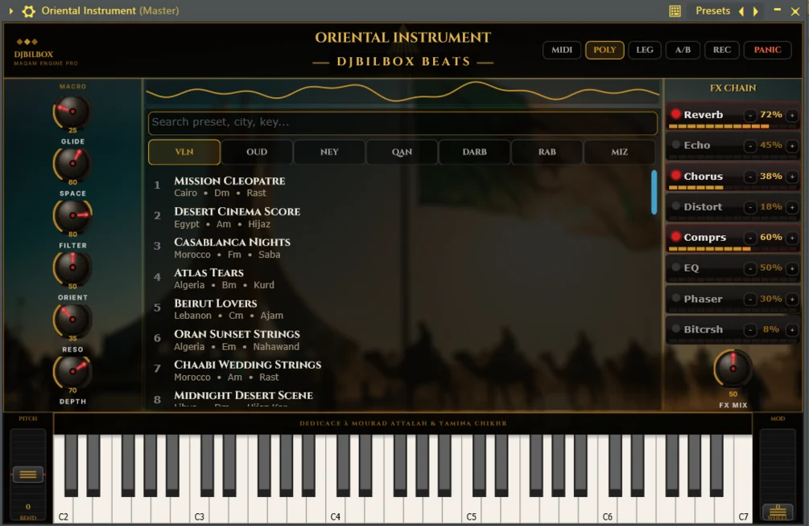
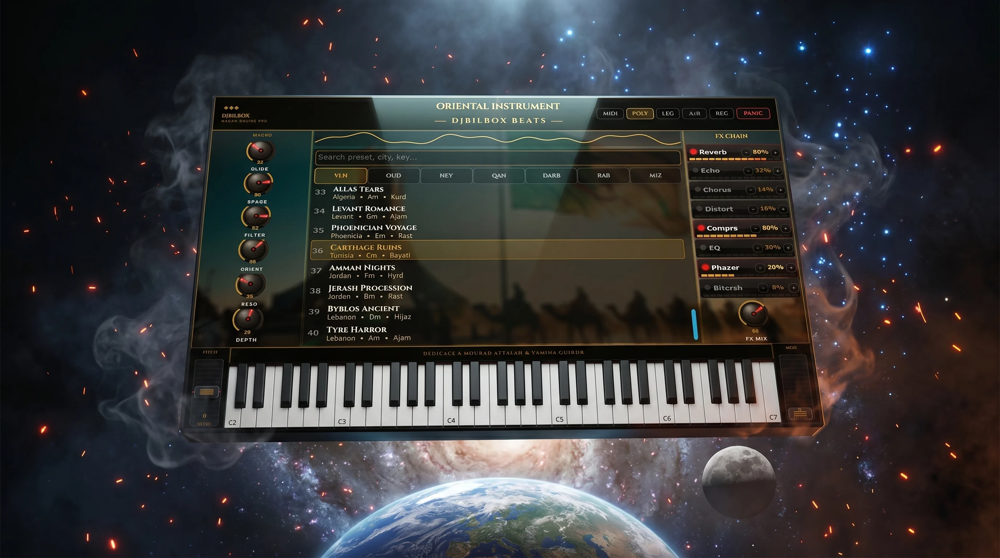

280+ authentic oriental instruments in one window — oud, qanun, ney, saz, rabab, darbuka and oriental strings. Driven by a real Maqam engine with quarter-tone tuning, so your melodies actually sound Middle-Eastern, not just "scaled".

Every family of the oriental orchestra, multi-sampled and playable from one browser. Search by preset, by city or by key — then drop a melody in seconds.

Each preset is tagged by country and by maqam — pick a mood, not a menu.
Everything you need to test the engine in your DAW.
The complete library, unlocked forever. One payment.